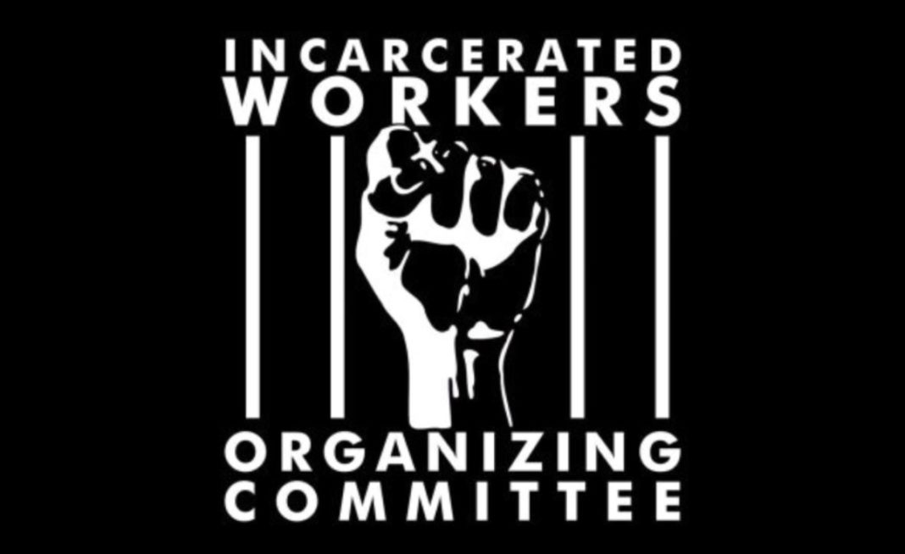

Want to Stop Violence in Minnesota Prisons? Free Our People
Submitted on Wed, 08/01/2018 - 7:23pm
By IWOC - It's Going Down, July 31, 2018
Editorial from the Twin Cities chapter of the Incarcerated Workers Organizing Committee (IWOC) that links horrific conditions inside with ongoing violence.
On July 18, the first prison guard in Minnesota’s history was killed, on top of recent violence in Oak Park Heights and Stillwater prisons. Yet all the DOC does is ask for more money on top of their 1.2 billion dollar budget. We need a new approach to change in Minnesota’s prisons. Stop putting money into a violent institution that is not correcting anyone. Free our people, and reinvest savings into reentry and rehabilitation.
For those of us who have been incarcerated or in regular contact with Minnesota’s prisons, recent violence is not a surprise – it’s an inevitability due to the behavior of the prisons system itself.
- Minnesota’s prisons have gotten progressively worse. Lip service to rehabilitation has little application to daily realities, while harsher parole practices, sentencing, and increased criminalization of our communities have manufactured an overcrowding crisis. And our people are dying. Between 2000-2013, 280 people incarcerated in Minnesota prisons were killed – 75% of them due to medical neglect. Yet we spend $41,366 per incarcerated person each year.
- Many prison guards in Minnesota are racist and abusive. The day before the killing at Stillwater, a prisoner reported that the man killed was telling everyone that “guards can do whatever we want to you and you can’t do anything about it”. Last year the Twin Cities Incarcerated Workers Organizing Committee released a podcast just scratching the surface of guard abuse in Minnesota’s prisons.
- It is well documented, including by the MN DOC, that increased community connection reduces recidivism. Yet the MN DOC regularly prevents mail delivery, makes visiting miserable, and represses prisoner and community attempts to build bridges with each other. Results are predictable: 48% of people released on parole end up back in prison, a shocking 88% of them for minor “technical violations” of parole, not new crimes. Even DOC employees are saying low staffing in overcrowded conditions are creating extreme dangers for prisoners and staff, while a rash of quitting has followed the recent killing.
There’s an easy solution to these violent conditions – free our people. Instead of putting yet more money into prisons we should immediately release all people in prison for crimeless “technical violations” of parole and nonviolent crimes, at least 40% of the population. Savings should fund successful reentry and rehabilitation programs. The parole system must be changed to ensure everyone has the opportunity to earn a life worth living. (Learn more about this fight on Saturday August 25th, 1-3pm in North Minneapolis – flier and facebook).
Nor can conditions be improved without prisoners having real power and community connections. Prisoners should be allowed to form their own unions and represent themselves. Community groups and family members should be welcomed. Visiting hours should be expanded, while mail censorship must end.
This August 21st – September 9th, prisoners around the country are going on strike against inhuman conditions confirmed by prisoners’ legal status as slaves under the 13th amendment to the US Constitution. Will Minnesota’s prisons join other systems in regular deadly violence between slaves and their cagers? Or will we treat humans like human beings, stop senseless incarceration, and use savings for rehabilitation and community? We say slavery must end – free our people!